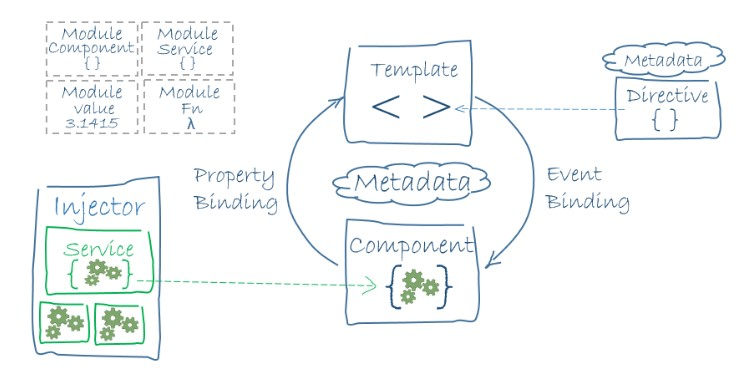

Nowoczesne Aplikacje Internetowe
Introduction to Angular 2
Tadeusz Makuch
tadeusz.makuch@gft.com
Andrzej Matłosz
andrzej.matlosz@gmail.com
Materiały: https://github.com/tmakuch/UAM
Tools
- Visual Studio Code extensions- tslint, Codelyzer, angular 2 snippets
- Style guide, Project structure
- Angular-seed
- Augury chrome tool
- Angular-cli
Angular 2 architecture
Angular 2 application is build as component tree

Modules
Every Angular app has at least one module, the root module
Features should be implemented in separate modules
Module is defined by @NgModule decorator
@NgModule decorator
declarations - contain definition of view classes
exports - define which declarations from module could be used in other templates
imports - define which modules we used inside this module
providers - definition of services from this module which will be accesible in all parts of the app
bootstrap - root component. Property used only in root module
Bootstraping application
bootstrap code should be placed in main.ts file
Angular offers a variety of bootstrapping options, targeting multiple platforms
Dynamic bootstraping with the Just-in-time compiler
import { platformBrowserDynamic } from '@angular/platform-browser-dynamic';
import { AppModule } from './app.module';
platformBrowserDynamic().bootstrapModule(AppModule);
Services
Service must be defined with @Injectable decorator
Service must be put into providers declaration in module
Other elements could inject service in consturctor
import { Injectable } from '@angular/core';
@Injectable()
export class UserService {
userName = 'Steve Kowalski';
}
import { UserService } from './shared/user.service';
@NgModule({
...
providers: [ UserService ]
...
})
export class AppModule { }
@Component({
...
})
export class TitleComponent {
userName: string;
constructor(private _userService: UserService) {
this.userName = _userService.userName;
}
}
Data Binding
4 binding options
interpolation- {{someVariable}}
property binding - one way into the DOM [someProperty]
event binding- one way into the component (someEvent)
two way binding- should be used only in forms with ngModel (syntax is called "banana in the box") [(ngModel)]
Components
@Component decorator
template / templateUrl
selector
providers
styles / styleUrls
Component sample
@Component({
selector: 'some-component',
template: `Text inside component`
})
export class SomeComponent {
}
Pass parameters into child component
@Input() someProperty: PropertyType
@Component({
...
selector: 'some-component',
inputs: ['someProperty']
...
})
export class SomeComponent
Input parameters could be defined with a setter ang getter
@Component({
selector: 'some-component',
template: `
"{{myProperty}}"
`
})
export class SomeComponent {
_myProperty: string = '';
@Input()
set myProperty(myProperty: string) {
this._myProperty = myProperty || 'default value';
}
get myProperty() { return this._myProperty; }
}
Events from child into parent component
@Output decorator or outputs property inside @ComponentDecorator
@Component({
selector: 'some-component',
template: ''
})
export class SomeComponent {
@Output() onSomeEvent: new EventEmitter<string>();
someMethod() {
this.onSomeEvent.emit('event value');
}
}
Sharing data by using service and RxJS
import { Injectable } from '@angular/core';
import { Subject } from 'rxjs/Subject';
export class SharedDataService {
private sharedDataSource = new Subject<string>();
getSharedData() {
return this.sharedDataSource.asObservable();
}
addData(value: string) {
this.sharedDataSource.next(value);
}
}
Sharing data by using service and RxJS
export class SomeComponent {
constructor(private sharedDataService: SharedDataService) { }
addSomeData() {
this.sharedDataService.addData('some text');
}
}
Sharing data by using service and RxJS
export class ListComponent {
sharedData: string[] = [];
constructor(private sharedDataService: SharedDataService) {
this.sharedDataService.getSharedData().subscribe(
newValue => {
this.sharedData.push(newValue);
}
)
}
}